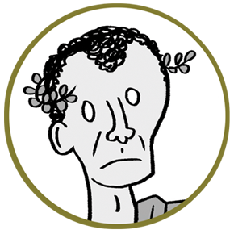
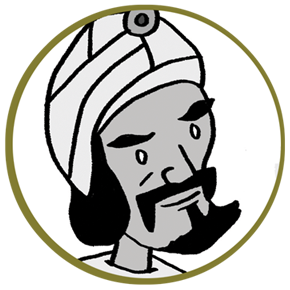
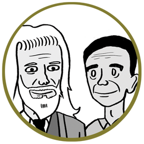
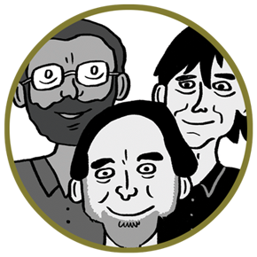
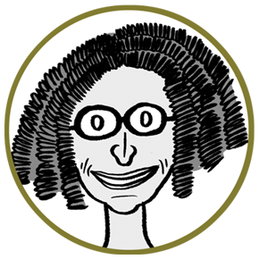

Jules César
Homme politique romain. S’il est connu pour bien d’autres choses, il est aussi intervenu sur la confidentialité. Son célèbre chiffrement permet d’illustrer ce concept : rendre un texte incompréhensible sauf si on sait le déchiffrer ou le décrypter.

Al-Kindi
Al-Kindi, penseur et chercheur du neuvième siècle originaire du monde arabe, est connu pour son manuscrit 'Traité de décryptage des messages cryptés'. Découvert à Istanbul en 1987, ce document représente la première exploration documentée de la cryptanalyse, l'art de décrypter des messages sans accès à la clé secrète. Cette démarche de décryptage est souvent métaphoriquement décrite comme un "assaut" intellectuel.

Whitfield Diffie et Martin Hellman
Des experts américains en cryptologie ont révolutionné le domaine en créant le concept de cryptographie asymétrique. Ce système utilise deux clés distinctes : une clé publique, que l'on peut partager librement pour coder les messages, et une clé privée, gardée secrète pour les décoder. Pour expliquer leur invention, ils ont utilisé les personnages d'Alice et de Bob dans des scénarios où leurs échanges sont potentiellement interceptés par un individu malveillant, cherchant à compromettre la sécurité de leur correspondance.

Rivest, Shamir et Adleman
Informaticiens américains. Ils sont les co-inventeurs du plus célèbre algorithme de cryptographie à clé publique, basé sur la factorisation de très grands nombres. Leur solution utilise un problème mathématiquement très difficile à résoudre, produit à partir de clés publiques et de clés privées. Une partie est donc accessible à tout le monde et l’autre appartient à l’utilisateur.
Shafi Goldwasser
Cette informaticienne américano-israélienne a grandement influencé les domaines des preuves interactives, en particulier les preuves à divulgation nulle de connaissance. Elle a développé des méthodes mathématiques pour prouver à quelqu'un que l'on détient une certaine connaissance sans révéler son contenu. Bien que le principe soit simple, sa mise en œuvre demeure complexe. Ses travaux ont montré que même avec une approximation, des problèmes difficiles restent difficiles.

Cynthia Dwork
Il s'agit d'une informaticienne américaine à l'origine du concept de confidentialité différentielle. Cette notion implique l'ajout d'une certaine quantité de 'bruit' aux données, les modifiant légèrement afin de permettre leur analyse tout en préservant la confidentialité des informations sensibles, notamment les données nominatives. L'objectif sous-jacent est de garantir l'honnêteté et l'équité des algorithmes.